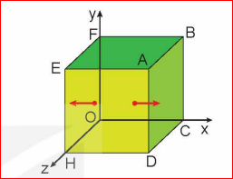

Lời dẫn: Áp suất khí phụ thuộc như thế nào vào những đại lượng đặc trưng sau đây của phân tử: khối lượng phân tử, tốc độ chuyển động của phân tử, mật độ phân tử, lực liên kết phân tử?
I ÁP SUẤT KHÍ THEO MÔ HÌNH ĐỘNG HỌC PHÂN TỬ
1 Tác dụng của một phân tử khí lên thành bình

Hình 12.1. Phân tử khí gây áp suất lên thành bình
Xét một lượng khí gồm \(N\) phân tử chứa trong một bình lập phương có cạnh \(l\), trong hệ tọa độ vuông góc \(Oxyz\). Một phân tử khối lượng \(m\) chuyển động thẳng đều song song với trục \(Ox\) với tốc độ \(v\) từ thành bình \(EFOH\) tới va chạm đàn hồi và trực diện với thành bình \(ABCD\). Sau khi va chạm, phân tử chuyển động theo chiều ngược lại với tốc độ có cùng độ lớn \(v\) tới thành bình đối diện.
Độ biến thiên động lượng của phân tử do va chạm với thành bình \(ABCD\) có độ lớn là:
✋ 1. Tại sao có thể coi chuyển động của phân tử khí trước và sau khi va chạm với thành bình là chuyển động thẳng đều?
| ✋ 2. Hãy dựa vào tính chất trên của chuyển động phân tử để tính thời gian \(\Delta t\) giữa hai va chạm liên tiếp của một phân tử lên thành bình ABCD theo \(l\) và \(v\). Từ đó dùng công thức tính xung lượng của lực trong thời gian \(\Delta t\) để chứng minh: |
- a) Lực do thành bình ABCD tác dụng lên một phân tử khí có giá trị là \(-\frac{mv^2}{l}\); lực do một phân tử khí tác dụng lên thành bình ABCD có giá trị là \(+\frac{mv^2}{l}\).
- b) Áp suất do một phân tử khí tác dụng lên thành bình ABCD có giá trị là: \(p_m = \frac{m}{V}v^2\) với thể tích lượng khí \(V = l^3\).
Lời giải:
- Khoảng cách giữa hai va chạm liên tiếp vào mặt \(ABCD\) là \(2l\). Thời gian giữa hai va chạm liên tiếp: \(\Delta t = \frac{2l}{v}\).
- Theo định luật II Newton dưới dạng xung lượng của lực: \(F \cdot \Delta t = \Delta p = -2mv \Rightarrow F = \frac{-2mv}{\Delta t} = \frac{-2mv}{\frac{2l}{v}} = -\frac{mv^2}{l}\).
- Theo định luật III Newton, lực do phân tử tác dụng lên thành bình \(ABCD\): \(F' = -F = +\frac{mv^2}{l}\).
- Áp suất do một phân tử tác dụng lên thành bình có diện tích \(S = l^2\): \(p_m = \frac{F'}{S} = \frac{\frac{mv^2}{l}}{l^2} = \frac{mv^2}{l^3} = \frac{m}{V}v^2\).
📌 Áp suất của một phân tử khí tác dụng lên thành bình:
Vận dụng các định luật cơ học Newton vào mô hình khí lí tưởng:
Chú ý kí hiệu: Động lượng: \(p\) | Áp suất của lượng khí: \(p\) | Áp suất của một phân tử khí: \(p_m\)
2 Tác dụng của N phân tử khí lên thành bình
Vì số phân tử \(N\) vô cùng lớn và các phân tử chuyển động hỗn loạn trong bình nên các hướng \(Ox, Oy, Oz\) là bình đẳng. Số phân tử chuyển động theo hướng \(Ox\) gây áp suất lên hai mặt đối diện chỉ bằng \(\frac{1}{3}\) tổng số phân tử (\(\frac{N}{3}\)).
Tốc độ các phân tử không bằng nhau, áp suất trung bình của mỗi phân tử: \(\overline{p}_m = \frac{m}{V}\overline{v^2}\), trong đó đại lượng \(\overline{v^2} = \frac{v_1^2 + v_2^2 + ... + v_N^2}{N}\) được gọi là "trung bình của các bình phương tốc độ".
📌 Công thức tính áp suất chất khí trong bình:
Gọi \(\mu = \frac{N}{V}\) là mật độ phân tử (số phân tử trong một đơn vị thể tích) và động năng trung bình của phân tử là \(\overline{E}_d = \frac{m\overline{v^2}}{2}\), ta thu được:
❓ 1. Hãy chứng tỏ hệ thức (12.1) phù hợp với định luật Boyle.
❓ 2. Hệ thức (12.2) cho thấy áp suất chất khí tác dụng lên thành bình phụ thuộc vào mật độ phân tử và động năng trung bình của phân tử. Hãy giải thích tại sao.
- Động năng trung bình \(\overline{E}_d\) càng lớn thì các phân tử chuyển động càng nhanh, va chạm vào thành bình càng mạnh (độ biến thiên động lượng càng lớn), do đó áp suất tăng.
II MỐI QUAN HỆ GIỮA ĐỘNG NĂNG PHÂN TỬ VÀ NHIỆT ĐỘ
Từ hai hệ thức \(pV = nRT\) và \(p = \frac{2}{3}\mu\overline{E}_d\), ta rút ra: \(\overline{E}_d = \frac{3}{2} \cdot \frac{R}{N_A} T\).
Hằng số Boltzmann (\(k\)):
Vì \(R\) và \(N_A\) (số Avogadro) đều là các hằng số, đặt \(k = \frac{R}{N_A}\):
📌 Công thức liên hệ động năng trung bình và nhiệt độ:
Hệ quả:
- Các khí khác nhau, khối lượng khác nhau nhưng ở cùng nhiệt độ thì phân tử có động năng trung bình bằng nhau.
- Động năng trung bình càng lớn thì nhiệt độ của khí càng cao.
- Nhiệt độ tuyệt đối \(T\) được coi là số đo động năng trung bình của chuyển động tịnh tiến phân tử.
❓ 1. Hãy dùng các hệ thức (12.2) và (12.3) để giải thích tại sao áp suất trong quá trình đẳng tích của một lượng khí xác định tỉ lệ thuận với nhiệt độ tuyệt đối.
Thay (12.3) vào (12.2): \(p = \frac{2}{3} \mu \overline{E}_d = \frac{2}{3} \mu \left(\frac{3}{2} kT\right) = \mu k T\).
Vì \(\mu\) và \(k\) đều là hằng số nên \(p \propto T\) (áp suất tỉ lệ thuận với nhiệt độ tuyệt đối).
❓ 2. Không khí chứa chủ yếu các phân tử khí nitrogen, oxygen và carbon dioxide. Hãy so sánh khối lượng, tốc độ trung bình, động năng trung bình của các phân tử khí trên trong một phòng có nhiệt độ không đổi.
- Khối lượng phân tử: \(m_{CO_2} > m_{O_2} > m_{N_2}\) (do \(M_{CO_2} = 44\), \(M_{O_2} = 32\), \(M_{N_2} = 28\)).
- Động năng trung bình: Vì ở cùng một phòng (cùng nhiệt độ \(T\)), theo hệ thức (12.3) thì \(\overline{E}_d\) của cả 3 loại phân tử là bằng nhau.
- Tốc độ căn quân phương (tốc độ trung bình): Do \(\overline{E}_d = \frac{1}{2} m \overline{v^2}\) như nhau, phân tử có khối lượng càng lớn thì tốc độ trung bình càng nhỏ. Do đó: \(v_{N_2} > v_{O_2} > v_{CO_2}\).
💡 EM CÓ BIẾT?
1. Hệ thức \(\overline{E}_d = \frac{3}{2}kT\) được thành lập dựa trên mô hình của khí lí tưởng, trong đó phân tử được coi là chất điểm, chuyển động của phân tử là chuyển động tịnh tiến. Do đó, động năng trung bình trong hệ thức trên được gọi một cách đầy đủ là động năng tịnh tiến trung bình.
Khi phân tử không được coi là chất điểm thì ngoài chuyển động tịnh tiến, phân tử còn có thể có chuyển động quay, chuyển động riêng của các nguyên tử trong phân tử... Khi đó cần thiết phải nêu rõ động năng trung bình trong biểu thức trên chỉ là động năng của chuyển động tịnh tiến.
2. Động năng tịnh tiến trung bình của phân tử có độ lớn bằng tổng động năng tịnh tiến của các phân tử chia cho số phân tử:
Căn bậc hai của \(\overline{v^2}\) là \(\sqrt{\overline{v^2}}\) được gọi là tốc độ căn quân phương của phân tử.
🎓 EM ĐÃ HỌC
-
Áp suất chất khí theo mô hình động học phân tử:
\(p = \frac{1}{3} \mu m \overline{v^2} = \frac{2}{3} \mu \overline{E}_d\)Trong đó \(\mu\) là mật độ phân tử khí (\(\mu = \frac{N}{V}\)), \(\overline{v^2}\) là trung bình của các bình phương tốc độ phân tử.
-
Liên hệ giữa động năng trung bình của phân tử và nhiệt độ:
\(\overline{E}_d = \frac{3}{2} kT\)Trong đó \(k\) là hằng số Boltzmann: \(k = 1,38 \cdot 10^{-23} \text{ J/K}\).
🚀 EM CÓ THỂ
Giải thích được một số hiện tượng có liên quan đến áp suất theo mô hình phân tử. Ví dụ, tại sao trong quá trình đẳng tích áp suất tỉ lệ thuận với nhiệt độ, trong quá trình đẳng nhiệt áp suất tỉ lệ nghịch với thể tích,...
💰 GAMESHOW: AI LÀ TRIỆU PHÚ 💰
Củng cố 10 câu trắc nghiệm - Hãy chọn đáp án đúng nhất!
📝 BÀI TẬP TỰ LUẬN TÍNH TOÁN
Bài 1:
Tính động năng tịnh tiến trung bình của các phân tử khí ở nhiệt độ \(100^\circ\text{C}\).
Lời giải:
- Đổi nhiệt độ sang Kelvin: \(T = 100 + 273 = 373 \text{ K}\).
- Áp dụng công thức động năng tịnh tiến trung bình:
\(\overline{E}_d = \frac{3}{2} k T = \frac{3}{2} \cdot (1,38 \cdot 10^{-23}) \cdot 373 \approx 7,72 \cdot 10^{-21} \text{ J}\).
Đáp số: \(7,72 \cdot 10^{-21} \text{ J}\).
Bài 2:
Ở nhiệt độ nào thì động năng tịnh tiến trung bình của các phân tử khí đạt giá trị \(1,0 \cdot 10^{-20} \text{ J}\)?
Lời giải:
- Từ công thức \(\overline{E}_d = \frac{3}{2} kT\), ta suy ra nhiệt độ tuyệt đối \(T\):
\(T = \frac{2 \overline{E}_d}{3 k} = \frac{2 \cdot 1,0 \cdot 10^{-20}}{3 \cdot 1,38 \cdot 10^{-23}} \approx 483,1 \text{ K}\).
- Đổi sang nhiệt độ Xen-xi-út:
\(t = T - 273 = 483,1 - 273 = 210,1^\circ\text{C}\).
Đáp số: \(483,1 \text{ K}\) (hoặc \(210,1^\circ\text{C}\)).
Bài 3:
Một bình kín chứa khí Helium (\(M = 4 \text{ g/mol}\)) ở nhiệt độ \(27^\circ\text{C}\). Tính tốc độ căn quân phương của các phân tử khí Helium trong bình.
Lời giải:
- Đổi nhiệt độ: \(T = 27 + 273 = 300 \text{ K}\).
- Khối lượng của một phân tử Helium:
\(m = \frac{M}{N_A} = \frac{4 \cdot 10^{-3} \text{ kg/mol}}{6,02 \cdot 10^{23} \text{ hạt/mol}} \approx 6,64 \cdot 10^{-27} \text{ kg}\).
- Ta có: \(\overline{E}_d = \frac{1}{2} m \overline{v^2} = \frac{3}{2} kT \Rightarrow \overline{v^2} = \frac{3kT}{m}\).
- Tốc độ căn quân phương:
\(v_{cqp} = \sqrt{\overline{v^2}} = \sqrt{\frac{3 \cdot 1,38 \cdot 10^{-23} \cdot 300}{6,64 \cdot 10^{-27}}} \approx 1367 \text{ m/s}\).
Đáp số: Khoảng \(1367 \text{ m/s}\).